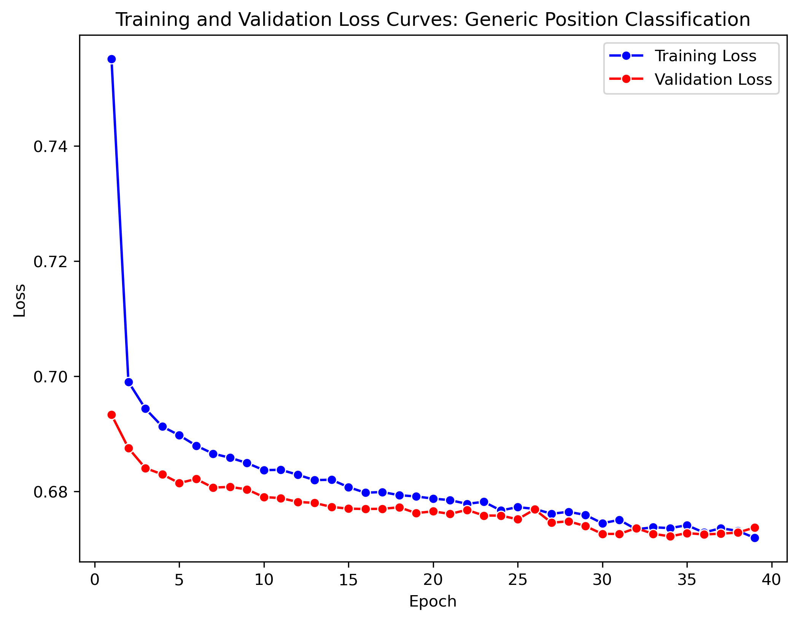
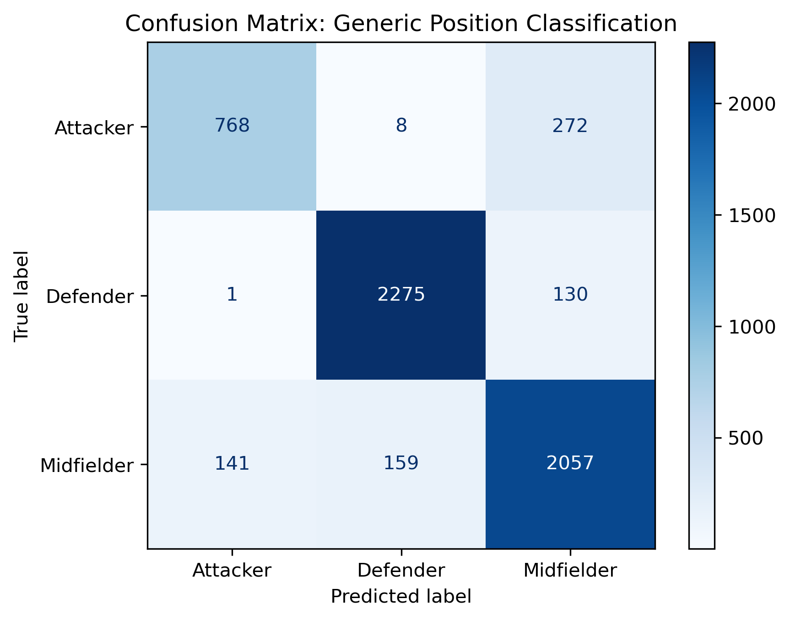
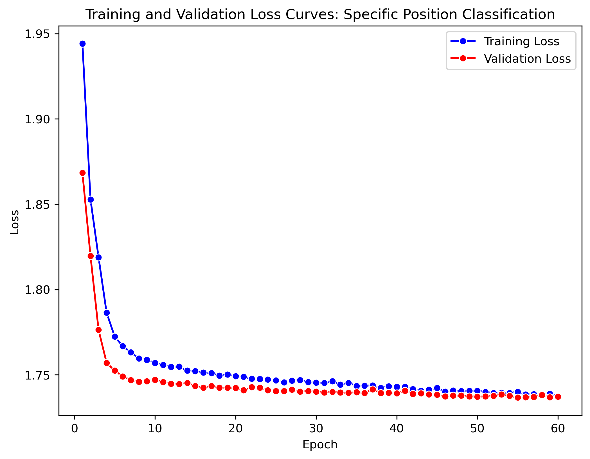
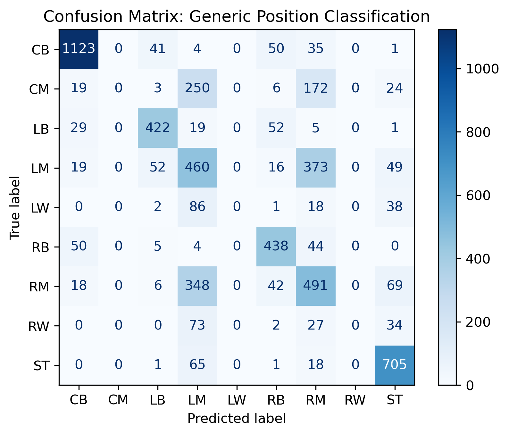

Results
Neural Network – Generic Position Classification
The neural network model for classifying players into their generic football positions—attacker, midfielder, and defender—demonstrated strong performance across all evaluation metrics. The model architecture and training procedure were carefully optimized using a grid search over various hyperparameters. The best configuration consisted of three hidden layers, each with 256 neurons, a dropout rate of 0.4, and the Adam optimizer with a learning rate of 0.0001. This configuration yielded a best validation loss of 0.6764, as determined over 39 training epochs.
During training, the model’s performance steadily improved, with the validation loss decreasing from 0.6933 in epoch 1 to 0.6722 by epoch 34, and achieving a final test loss of 0.6715. This suggests that the model not only learned meaningful representations but also generalized well to unseen data.

The model’s classification performance was evaluated using accuracy, precision, recall, and F1 score, which were derived from the multi-class confusion matrix. The overall accuracy of the model was 0.8776, indicating that nearly 88% of the predictions matched the true generic position labels. The precision (0.8772) and recall (0.8776) scores reflect a high degree of correctness and completeness in the model’s predictions, respectively. The F1 score of 0.8766 further confirms the balanced nature of the model’s performance.
The following table presents the performance metrics for the generic classification task:
| Class | Precision | Recall | F1 Score | Support |
|---|---|---|---|---|
| Attackers | 0.8440 | 0.7328 | 0.7845 | 1048 |
| Defenders | 0.9316 | 0.9456 | 0.9385 | 2406 |
| Midfielders | 0.8365 | 0.8727 | 0.8542 | 2357 |
Attackers (Class 0):
The model shows good precision (0.8440) but struggles with recall (0.7328), resulting in a moderate F1 score of 0.7845. This indicates that while the model is accurate when predicting attackers, it fails to capture some true attackers, leading to false negatives.Defenders (Class 1):
Defenders are the best predicted class, with a high precision (0.9316) and recall (0.9456), resulting in an outstanding F1 score of 0.9385. The model is both accurate and comprehensive in identifying defenders, showing strong performance in this category.Midfielders (Class 2):
The model maintains solid performance for midfielders with a precision of 0.8365 and recall of 0.8727, yielding a strong F1 score of 0.8542. This indicates a balanced approach to predicting midfielders, with relatively few false positives or negatives.

These class-level metrics confirm that the model performs consistently across all three generic positions, though improvements could be made in enhancing recall for attackers. The macro-averaged F1 score of 0.8591 and weighted average F1 score of 0.8766 further validate the model’s robustness across the imbalanced class distribution.
While the current results demonstrate a high-performing model, further enhancements may be possible through the exploration of more complex architectures (e.g., attention mechanisms or residual connections) or additional input features that capture contextual positional data. Nonetheless, this neural network serves as a strong baseline for generic position classification tasks in football analytics.
Neural Network – Specific Position Classification
The neural network model developed to classify players into their specific football positions—such as central midfielders, wingers, fullbacks, and strikers—used a more complex architecture and optimization process compared to the generic model. A comprehensive grid search was conducted across multiple hyperparameter combinations, ultimately selecting the following best configuration: four hidden layers with 128 neurons each, a dropout rate of 0.4, the RMSprop optimizer, and a learning rate of 0.0001. This setup achieved a best validation loss of 1.7440 after training for 60 epochs.
The model exhibited gradual improvement during training, with the validation loss decreasing from 1.8684 in epoch 1 to 1.7367 by epoch 55, before reaching a final test loss of 1.7404. This consistent convergence suggests effective learning, although the loss plateaued in the latter epochs, hinting at the limits of this architecture for such a fine-grained task.

Despite successful convergence, the overall classification performance was moderate due to the increased complexity of distinguishing between nine specific player positions. The model achieved an accuracy of 0.6262, with a precision of 0.5640, recall of 0.6262, and F1 score of 0.5920. These metrics indicate that while the model can often identify the correct position, it struggles with class-specific consistency—particularly for underrepresented classes.
The following table summarizes the performance metrics for each class in the specific position classification task:
| Class | Precision | Recall | F1 Score | Support |
|---|---|---|---|---|
| 0.0 | 0.8927 | 0.8955 | 0.8941 | 1254 |
| 1.0 | 0.0000 | 0.0000 | 0.0000 | 474 |
| 2.0 | 0.7932 | 0.7992 | 0.7962 | 528 |
| 3.0 | 0.3514 | 0.4747 | 0.4039 | 969 |
| 4.0 | 0.0000 | 0.0000 | 0.0000 | 145 |
| 5.0 | 0.7204 | 0.8096 | 0.7624 | 541 |
| 6.0 | 0.4150 | 0.5041 | 0.4553 | 974 |
| 7.0 | 0.0000 | 0.0000 | 0.0000 | 136 |
| 8.0 | 0.7655 | 0.8924 | 0.8241 | 790 |
Center Backs (Class 0):
The model performed exceptionally well for center-backs with high precision (0.8927) and recall (0.8955), resulting in an F1 score of 0.8941. This suggests that the model reliably identifies this position with few false positives and false negatives.Center Midfielders (Class 1):
The model failed to classify center midfielders, resulting in a precision and recall of 0.0000. This could be due to the underrepresentation of left-backs in the training data or insufficient discriminative features in the input data for this role.Left Backs (Class 2):
Left-backs were classified well with precision (0.7932) and recall (0.7992), yielding a strong F1 score of 0.7962. This indicates that the model can reliably classify these players.Left Midfielders (Class 3):
Performance for Left midfielders was moderate, with a F1 score of 0.4039. The model exhibited weaker results in both precision and recall, which may be due to the complex nature of this position, which often overlaps with other roles.Left Wingers (Class 4):
Left wingers were poorly classified with precision and recall both at 0.0000. The lack of success here points to a data imbalance or feature overlap causing difficulty in learning the distinguishing traits of defensive midfielders.Right Backs (Class 5):
The model performed well with right backs, scoring precision (0.7204), recall (0.8096), and an F1 score of 0.7624, indicating strong classification results for this position.Right Midfielders (Class 6):
The model’s F1 score for right midfielders was 0.4553, with moderate performance in both precision and recall. Improving precision would help reduce false positives for this position.Right Wingers (Class 7):
Similar to other underrepresented roles, right wingers had a precision and recall of 0.0000. This suggests the model was unable to effectively identify this position, likely due to insufficient data or feature ambiguity.Strikers (Class 8):
The model performed strongly with strikers, achieving an F1 score of 0.8241. Both precision (0.7655) and recall (0.8924) were high, showing that the model accurately identified this attacking role.

Overall, while the model demonstrated strong performance for certain positions, such as center backs (Class 0) and strikers (Class 8), there is a significant imbalance in how it classifies less-represented positions, like left midfielders (Class 3) and right wingers (Class 7). These results highlight areas for potential improvement, such as data augmentation, class balancing, or incorporating positional embeddings into the model.
The macro-averaged F1 score of 0.4595 reflects the variance in performance across classes, while the weighted average F1 score of 0.5920 shows that the model performs better on the more prevalent classes. These results indicate that while the model captures positional patterns for well-represented roles, like center backs and strikers, it struggles with niche or overlapping classes such as center midfielders (Class 1) and left wingers (Class 4).
Future improvements could involve class balancing techniques, positional embeddings, or sequence-aware models to capture tactical roles more dynamically. Nonetheless, the current model offers a useful first step in fine-grained player role prediction.